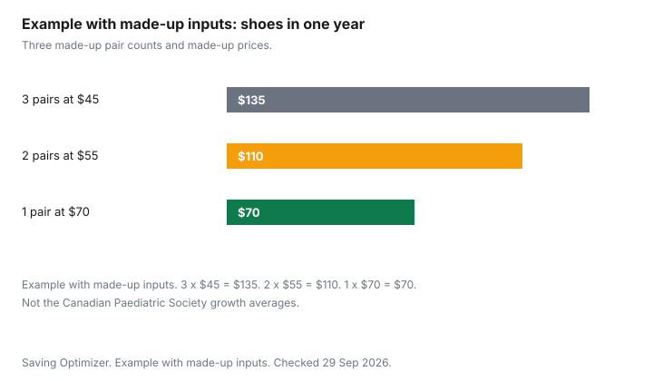

Clothing · Canada
Kids' Shoes in Canada: Fit, Growth and How Often You Really Need to Buy
Kids' shoes get replaced when the foot has used up the room in front of the toes, not when a calendar says three months have passed. The Canadian Paediatric Society's Caring for Kids page states growth averages and a fitting check. Ontario's footwear rebate uses a size cut-off, not an insole length. This page keeps those two documents apart, then shows a made-up year of purchases so a household can see what "how often" costs once a price is real. Winter boots as a budget are kids' winter gear and winter boots. The clothing rebate in full is kids' clothing and the sales-tax rebate. Outgrown pairs that still have tread can move through selling kids' clothes. This is not medical advice. If a child has pain while walking, the Society's page says to contact your doctor.
Key takeaways
- Caring for Kids, updated July 2022: about 1.25 cm, a thumb's width, between the longest toe and the tip of the shoe while the child is standing, and about 5 mm between the edge of the shoe and all toes. The heel should fit snugly.
- The same page: before 18 months, feet will probably grow by more than half a shoe size every 2 months. A toddler's feet grow an average of half a size every 3 months. From age 3, about one size a year. Children vary. Recheck the thumb test rather than buying on the average alone.
- Ontario rebates the 8 percent provincial portion of the HST on children's footwear up to and including girls' size six and boys' size six. The page does not state an insole length. Skates, cleats, ski-boots, and adult sizes are excluded.
- A hand-me-down is a fit check, not a tradition. If the child cannot try it on, or the heel is packed flat, it fails.
- Example with made-up inputs: three pairs at $45 is $135 in a year. Two pairs at $55 is $110. One pair at $70 is $70. Not the Society's growth rates, and not a store.
Fit checks at home
The Canadian Paediatric Society's Footwear for children page, on caringforkids.cps.ca, updated July 2022 and current as of 29 Sep 2026, says your child should always try shoes on before you buy them. While the child is standing, the page says the shoes should fit snugly at the heel so the foot does not move forward, allow approximately 1.25 cm (a thumb's width) between the longest toe and the tip, have a 5 mm space between the edge of the shoe and all toes, and show a small crease in the material if you pinch the shoe. Those four checks are the fitting-room list. A thumb pressed at the toe while the child is sitting is a shorter foot than the foot that will walk home.
The same page gives growth as averages, not as a purchase schedule. Before 18 months of age, feet will probably grow by more than one-half a shoe size every 2 months. A toddler's feet grow an average of one-half a size every 3 months. Once a child is 3, feet grow by about one size every year. The page also says feet develop naturally and will almost never require special footwear, and that corrective shoes for flat feet or intoeing are usually unnecessary. If a child continues to have flat feet with no pain, the page says corrective shoes or orthotics are likely not necessary. If the child complains of pain while walking, it says to contact your doctor. This guide stops at that sentence. It does not add a brand of shoe, an insert, or a clinic.
| Check | What the Society's page says |
|---|---|
| Room at the toe | Approximately 1.25 cm, described as a thumb's width, between the longest toe and the tip, with the child standing. |
| Heel slip | The shoe should fit snugly at the heel so the foot does not move forward while walking. |
| Width | About 5 mm between the edge of the shoe and all toes. |
| Flex | A small crease in the material if you pinch the shoe while the child is standing. |
| Wear pattern, at home | The Society's page does not publish a wear-pattern diagram. If the sole is bald at one edge or the heel counter has collapsed, the pair has stopped matching the checks above. Recheck on the foot. |
Indoor vs outdoor shoe rules at school
Some school supply lists ask for a pair that stays indoors and a pair for the yard. That is a school rule, when it is written down.
This guide does not cite a provincial requirement that every child have two pairs. Read the list that came from your school, the same way the back-to-school guide says to separate the first week from the rest of the year. If indoor shoes are required, they still have to pass the thumb test. A too-small pair labelled "indoor only" is still a too-small pair. If the list is silent, one pair that handles the walk to school is the smaller purchase. Do not buy the second pair to match a rule you have not read.
Gym shoes, if the school names them, are a third line only when the gym will not accept the indoor pair. Black soles, white soles, and non-marking soles are list items. Buy the sentence that is printed. A cleared-out closet is not a gym policy.
Used shoes: when OK and when not
A used shoe is acceptable when this child can try it on and it passes the Society's checks, and when the sole, the heel counter, and the fastening still do their jobs. It is a poor plan when the shoe is inherited from a cousin you cannot visit, because you cannot do the standing check, and when the insole is packed into the shape of someone else's foot. The Society's page says shoes should be tried on before you buy them. A hand-me-down that skips that step skips the only fit method this guide is willing to cite.
Once Upon a Child's sell page says the stores buy children's shoes, among other items, and pay cash on the spot for what they accept. That is a way to move a pair that no longer fits and still has tread. It is not a promise of a price. Safety exclusions on that page are car seats and recalled products, not a shoe-specific medical rule. Pass winter boots on only when the tread, the heel, and the closure are intact and the fit checks pass on the child who will wear them. A smooth sole on ice is not a saving. The winter-boot guide is the purchase side of that decision.
| Type | Used can be reasonable | Prefer new |
|---|---|---|
| Winter boots | Tread, heel, and closure are intact, the child passes the standing checks, and the boot is not smooth at the sole. | Bald tread, a cracked shell, a zipper that has already failed, or a fit you could not test. |
| Runners | The heel counter is still firm and the standing checks pass. | The heel is packed down or the sole is worn on one edge. A grown-out runner is how trips start. |
| Sandals | Straps adjust to this foot and the sole is not slick. | Stretched straps that will not hold the heel snug. |
| Indoor school shoes | The school allows any clean pair and the fit checks pass. | The school names a style you do not have, or the hand-me-down fails the thumb test. |
| Skates, cleats, ski-boots | Only with a fit you can test, and not as a tax-rebate purchase in Ontario. The rebate page excludes them. | Wrong size. Extra room in a skate is not the same 1.25 cm plan as a runner. Ask the shop that fits skates. |
Children's footwear tax rebates by province
Ontario's HST point-of-sale rebates page, updated 19 March 2025 and current as of 29 Sep 2026, says the province rebates the 8 percent provincial portion of the HST on qualifying children's footwear. The footwear qualifies when it is designed for babies and for girls and boys up to and including girls' size six and boys' size six.
Without a numerical size, footwear designated for girls or boys in small, medium, or large can qualify. Excluded: skates, rollerblades, ski-boots, footwear with cleats or similar footwear, adult-sized footwear even if bought for a child, and footwear designed to prevent bodily injury. The page does not state an insole length in centimetres. This guide does not give one. Read the size on the box. When the child moves past size six, the Ontario rebate described here stops for that pair even if the shopper is still a child.
The same page says the Canada Revenue Agency administers the rebate. If the supplier does not provide it, you may claim it with form GST189. The page also describes a separate First Nations point-of-sale rebate. That is a different test. Do not mix the two. The page gives 1-800-959-8287 for GST/HST questions. A discounted gift card, if you use one, changes the amount you pay the store. It does not create a size-six rule the receipt does not show. Confirm the provincial portion came off before you count it.
Other provinces: check your province. This guide does not cite a British Columbia, Nova Scotia, Prince Edward Island, or Quebec footwear rebate rate or size cut-off. Do not copy Ontario's size six or the 8 percent into another tax system. Not tax advice.
Sale timing
Buy the pair when the foot needs it, then use a sale if the size you need is on the table and the return window covers a wrong fit. End-of-season boots for next winter only work when you are confident of the size or you can return them.
The Society's averages say a toddler can move half a size in a few months, so a boot bought in April for next January can be short by winter. Recheck in the fall. The best time to buy clothes guide is the calendar method, without a guessed discount percent. Black Friday, 27 November 2026, and Boxing Day, 26 December 2026, are dates on the calendar. They are not a promise that children's shoes will be reduced, and they are not a reason to buy a short pair.
A discounted retailer gift card is an offer type. It can lower what you pay if the card's discount is real on the day you buy and the store accepts it. It does not fix a fit, and it does not add a size past Ontario's cut-off back into the rebate. Read the card terms. Example with made-up inputs. A child who needs three pairs in a year at $45 each spends $135. A child who needs two pairs at $55 spends $110. A child who needs one pair at $70 spends $70. The counts and the prices are made up. They are not the Society's half-size averages turned into a shopping list. Use the averages to decide when to remeasure. Use your receipts to decide what the year cost.

Sources
- Canadian Paediatric Society, Caring for Kids, Footwear for children, caringforkids.cps.ca, updated July 2022, as of 29 Sep 2026. Toe room, heel, 5 mm, pinch test, and the growth averages quoted above. Pain: contact your doctor, as that page says.
- Ontario, HST point-of-sale rebates, ontario.ca, updated 19 March 2025, as of 29 Sep 2026. Footwear to girls' size six and boys' size six. No insole length on that page. Exclusions include skates, cleats, ski-boots, and adult sizes. Form GST189. CRA 1-800-959-8287.
- Once Upon a Child, Sell To Us, as of 29 Sep 2026. The stores buy children's shoes and pay cash on the spot for items they accept.
Frequently asked questions
How often do kids need new shoes?
When the fitting checks fail, not on a fixed month. The Canadian Paediatric Society says that before 18 months, feet will probably grow by more than half a shoe size every 2 months, that toddlers average half a size every 3 months, and that from age 3 growth is about one size a year. Recheck the thumb test. The chart's pairs per year are made-up inputs, not that page.
How much room should kids' shoes have?
The Society's page, updated July 2022, says approximately 1.25 cm, a thumb's width, between the longest toe and the tip while the child is standing. It also says about 5 mm between the edge of the shoe and all toes, a snug heel, and a small crease if you pinch the shoe. Try the pair on. A sitting measurement is a shorter foot than the one that will walk.
Are hand-me-down shoes OK?
They are OK when this child tries them on, the Society's checks pass, and the sole and heel counter are intact. They are a poor plan when you cannot do the standing check, or the insole is pressed into another child's shape. The Society says to try shoes on before you buy them. A hand-me-down that skips that step skips the only fit method this guide cites.
When should I buy kids' winter boots?
When the current pair fails the tread or the fit check, or ahead of the season only if you can return a wrong size. On the Society's average, a toddler can move half a size in a few months, so a boot bought far ahead can be short by winter. Recheck in the fall. Bald tread is not a saving on ice.
Can I get the children's clothing rebate on shoes?
In Ontario, qualifying children's footwear gets a point-of-sale rebate of the 8 percent provincial portion of the HST, up to and including girls' size six and boys' size six. The ontario.ca page does not state an insole length. Skates, cleats, ski-boots, and adult sizes are excluded. Other provinces: check your province. Not tax advice.
Researched and drafted with AI assistance and fact-checked against official Canadian sources. How we create content.
Disclosure: Discounted retailer gift cards are an offer type. Saving Optimizer may earn a commission if a partner link is added later. No gift-card partnership is claimed. A discount on a card does not change fit, a school's shoe rule, or a provincial rebate. Education only. This is not health or tax advice.